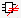

Comparison Results Tab
The Comparison Results tab is shown in Figure 1. The following tables and figures provide additional information:
The following table describes the icons used in the Comparison Results tab.
Icon |
Description |
|---|---|
|
Tab icon indicating correct results for Calibre nmLVS comparison. |
|
Tab icon indicating incorrect results for Calibre nmLVS comparison. |
|
Clean cell |
|
Error |
|
Fixed |
|
LVS Box |
|
LVS Black Box |
|
LVS Gray Box |
|
LVS Box error |
|
Top cell |
|
Detailed Instance Info Indicates results from the “Detailed Instance Connections” section of the LVS Report. This node is only displayed when the tree is sorted by Layout Cell. |
 |
Unmatched Objects Indicates results from the “Unmatched Objects” section of the LVS Report. This node is only displayed when the tree is sorted by Layout Cell. |
Item |
Description |
|---|---|
Tree View |
|
Column selection button. |
Click to open a dropdown list with column selections. |
Column headings |
Click to sort the results by that category. Right-click in a column header for a context-sensitive menu. |
Layout Cell/Type Error Type/Layout Cell Fix Type/Layout Cell |
The heading of the first column depends on the sorting method. Right-click in the heading of the first column to select the sorting method. Right-click a cell name for a pop-up menu with options for displaying cell information. Right-click a discrepancy for a pop-up menu to mark discrepancies as fixed.
|
Source Cell |
As described. |
Count |
The number of discrepancies, “Clean”, “Not Compared”, or “Incorrect”. For cells listed as “Not Compared” or “Incorrect”, see the report in the detailed view to determine the problem. |
Fixed |
The number of fixed discrepancies. This column is not shown by default. |
Nets Instances Ports |
Count of each element found in the layout (L) and source (S), with the number of differences given in parentheses. If there are no differences the entry is in gray text. When sorting results by these column headings, you can right-click in the column header and select Sort By to sort by layout or source count or difference count (the default).
Pin counts — When viewing an incorrect net discrepancy, the information in the Instance column refers to the number of pins connected to the net; see “Sorting Incorrect Net Mismatch Errors by Connected Pin Count”. Pin. counts are after any netlist and device reduction performed by Calibre nmLVS |
Detailed View |
|
Red and blue highlighted design elements |
|
You can bring up a context-sensitive menu by right-clicking a cell or discrepancy in the tree view, as shown in Figure 2.
Menu Item |
Description |
|---|---|
Right-click cell |
|
View Cell |
Opens the cell in the internal schematic viewer. |
Show Cell Info |
Opens the Info pane with cell information. |
Corresponding Cell |
Opens a menu for the corresponding cell in the source. Note: <Load XDB> is displayed if the XDB is not loaded. |
Copy Name |
Copies cell name to clipboard. |
Right-click discrepancy |
|
Discrepancies Fixed |
Marks a discrepancy as fixed, using a green check mark. |
Isolate Path |
Available only in discrepancies of type “Possible hierarchical short chains to non-floating extra pins.” The selection opens the Finder tab, populates the fields for an “Isolate Path on Layout Net” search, and opens the dialog box to select the path endpoints in the layout viewer. See “Tracing Possible Hierarchical Short Chains to Non-Floating Extra Pins”. |
Menu Selection |
Description |
|---|---|
View By Layout Cell |
Sorts first by cell, then by type. Shows both discrepancies and fix suggestions. Good for an overview of the design. |
View By Error Type |
Sorts first by error type, then by cell. Shows only discrepancies. Clean cells appear in a separate category. |
View By Fix Type |
Sorts first by design fix type, then by cell. Shows only fix suggestions. Useful for finding common problems. Clean cells appear in a separate category. |
Show Clean Cells |
Displays cells that are
clean, using a green smiling face. Also see the setting “Show Clean Cells
on startup” on the |
Show LVS Box Cells |
Displays cells that are specified in an LVS Box statement. LVS Box cells are indicated with the icon. |